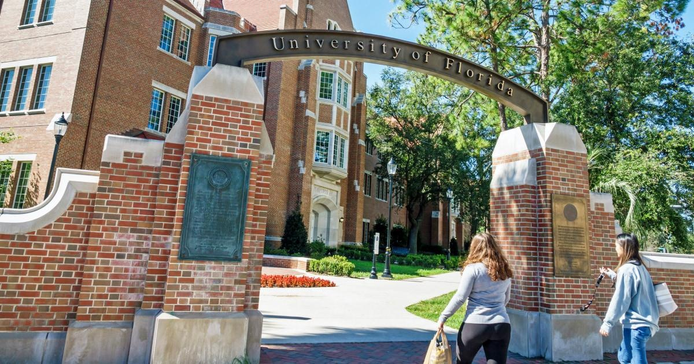

NoneThe University of Florida has eliminated all diversity, equity and inclusion positions due to a new state rule that prohibits the addition of such programs, according to an administrative memo from the university. In addition to slashing all DEI positions, UF has also closed the Office of the Chief Diversity Officer and stopped DEI-focused contracts with external vendors, per the memo, in accordance with Florida Board of Governors regulation 9.016. The regulation defines DEI as “any program, campus activity, or policy that classifies individuals on the basis of race, color, sex, national origin, gender identity, or sexual orientation and promotes differential or preferential treatment of individuals on the basis of such classification.” The $5 million in funds previously allocated for UF’s DEI initiatives, including salaries and expenditures, will now be placed into a faculty recruitment fund according to the memo. “The University of Florida is — and will always be — unwavering in our commitment to universal human dignity,” the memo said, which was signed by J. Scott Angle, provost and senior vice president for academic affairs; Amy Meyers Hass, vice president and general counsel; and Melissa Curry, vice president for human resources. “As we educate students by thoughtfully engaging a wide range of ideas and views, we will continue to foster a community of trust and respect for every member of the Gator Nation,” the memo said. “The University of Florida is an elite institution because of our incredible faculty who are committed to teaching, discovering, and serving.” The state regulation bans the use of state funds for DEI programs, as well as for “political or social activism,” which the state memo defines as “any activity organized with a purpose of effecting or preventing change to a government policy, action, or function, or any activity intended to achieve a desired result related to social issues, where the university endorses or promotes a position in communications, advertisements, programs, or campus activities.” Gov. Ron DeSantis applauded the move in a post on social media platform X, saying, “DEI is toxic and has no place in our public universities.” “I’m glad that Florida was the first state to eliminate DEI and I hope more states follow suit,” DeSantis added. Meanwhile, Congressional Black Caucus Chairman Steven Horsford said the move “is far out of step with the standards and values expected of a public institution of higher education,” adding that “intolerance is toxic,” rejecting DeSantis’ assessment that DEI is “toxic.” In an October interview with local news outlet WLRN — when the resolution was a mere proposal — Andrew Gothard, president of the United Faculty of Florida union, said, “This is all about silencing students. It’s about silencing faculty. It’s about withholding funding from individuals who have beliefs, speak ideas, or take actions that would disagree with the politics of elected leaders.” He also said the resolution could be summed up into two words: “censorship and exclusion.” Per the UF memo, faculty whose positions were eliminated will receive the “standard twelve weeks of pay.” It also encouraged those employees to apply to other available positions within the university. |
 |